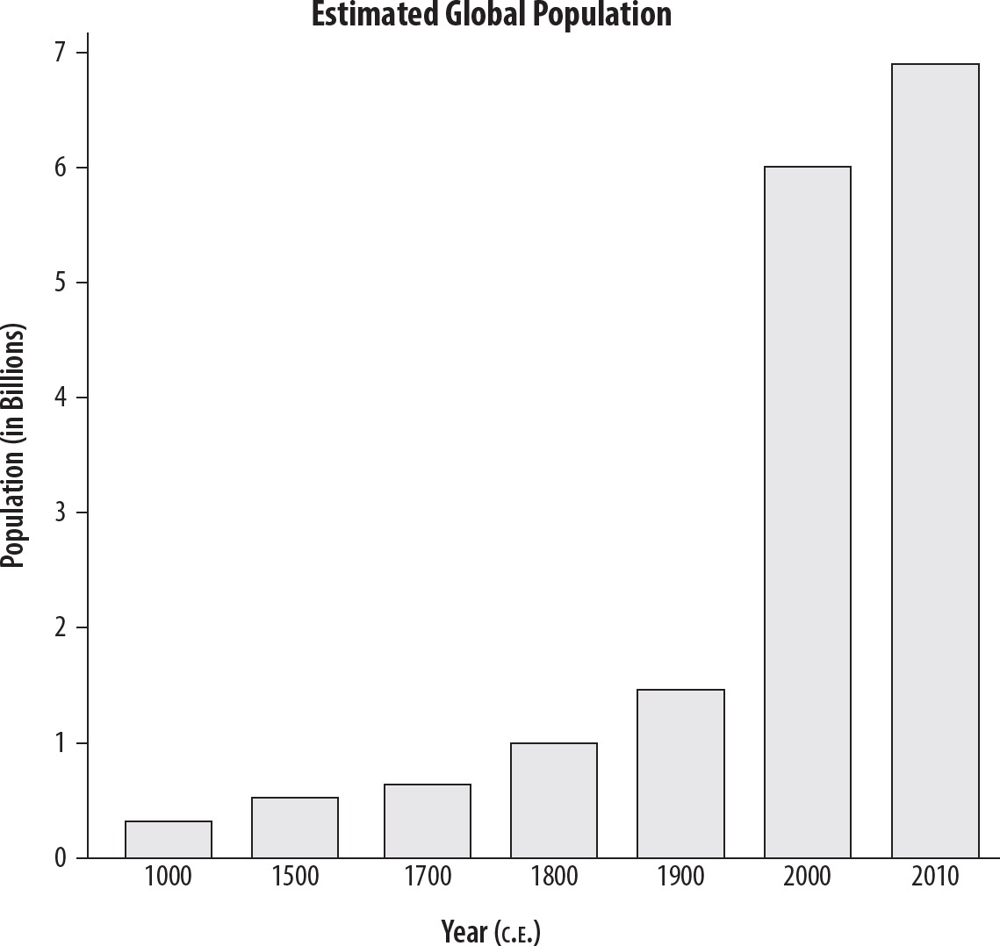

Chapter 12
UNIT 9
Globalization
c. 1900 to the Present
After the Cold War, when communism in Eastern Europe fell and began to weaken in other regions, an American economist claimed we were at “the end of history.” Part of what he meant was, the world of “bi-polarism” in which two superpowers competed for global domination, was over. Since then, much has been written about the “ever shrinking world” and the “rising global community.” But, as with everything in history, those arguments are not entirely true.
I. |
ADVANCES IN TECHNOLOGY AND EXCHANGE AFTER 1900 |
The 20th century saw technological advances in greater numbers and with more frequency than ever before. Societies often struggled to adapt to the rapid changes.
A.COMMUNICATION
1.The telephone was invented in 1876 in the U.S. Until the 1920s in the West, it was known as an electrical toy used mainly by the rich and privileged in the “developed” countries of Europe, Australia, North and South America, and Japan. In the economic boom of the “Roaring Twenties” that occurred in most Western nations, more people could afford to have a telephone in their homes. That technology remained almost unchanged until the 1980s, when cell phones became available in large cities. The pattern repeated itself early on as only the wealthy could afford cell phones, but as prices went down, popularity went up. By the early 21st century, cell phones had become almost a necessity in the industrialized, developed world.
2.Radio/TV: Originally considered a device for one-to-one communication—a “wireless telegraph”—by the 1920s, radio networks began broadcasting entertainment and news to national audiences. Television gained popularity after World War II, so much so that by the 1960s in the U.S., more homes had TVs than indoor toilets. It rapidly became more popular than radio as a source of information and entertainment. Both radio and television were used by governments to propagate their messages to citizens and foes alike.
3.Internet: Originally designed as a way for scientists to communicate computer data across telephone lines in the 1960s, the internet became a global phenomenon by the mid-1990s. Electronic mail (email) developed into a must-have instant communication service. By 2000, the internet connected billions of people and businesses, but there were still many areas with little or no internet access, primarily in rural Africa and Central Asia.
B.TRANSPORTATION
1.Automobiles
i.Motorized vehicles were introduced in Germany in the late 19th century, but like radios and telephones, they did not become popular in the industrialized world until the 1920s. When automobiles did become popular, they changed many aspects of Western society. One big change was that people became more mobile. They were less likely to live their entire lives in one place. Residing in the “suburbs” and working miles away in city centers became popular. Driving to distant vacation spots—in Europe, that could mean in another country—was also possible.
ii.Cars also created new industries and jobs: multinational corporations that sold petroleum products, the travel industry, and government-funded modern road construction, to name a few. The automobile’s popularity also meant less use of public transportation, crowded rush-hours, traffic deaths, and increased air pollution.
2.Airplanes
i.The first wide-scale use of airplanes was in World War II.
ii.Air travel in the West was for the wealthy (and military pilots) until after World War II, when an unprecedented economic boom occurred and the middle class could afford to join “the jet set.” By the end of the 20th century, passenger air travel was commonplace in the West, but did not surpass the use of the automobile.
iii.One casualty of air travel in many Western nations was the passenger train, which had been the most popular form of mass travel for almost 100 years.
3.Space Travel
i.Although not a common way of traveling, its introduction in the mid-20th century heralded a technological step that humans had dreamed about for millennia.
ii.Liquid-fueled rockets were experimental in the 1920s and used as weapons by Germany in World War II. The Soviet Union launched the first missile to orbit the Earth in the 1950s, followed quickly by their rival, the U.S.
iii.Western nations feared nuclear bombs would be launched from space. A “race to the Moon” fired Cold War imaginations in the 1960s and was won by the U.S. After the fall of communism in Russia in the early 1990s, the U.S. and Russia became partners in space exploration with a jointly-run International Space Station. By the early 21st century, other nations had launched missiles into space, particularly China and the European Space Agency.
C.ENERGY
1.Fossil fuels. Coal was an energy source around the world for many centuries, but the Industrial Revolution’s powerful machines demanded unprecedented amounts of fuel. Diesel and gasoline, refined from petroleum (“rock oil”) in the second half of the 19th century, was an even more efficient fuel supply, and industrial production increased even more. Like coal, processing petroleum products can damage the environment. Throughout the 20th century, governments and fuel-related businesses struggled to find a balance between society’s demands for these fuels and the health of the environment. By the end of this era, despite some implementation of other forms of energy such as solar and wind power, fossil fuels remained the cheapest and most-utilized source of energy.
2.Nuclear energy. This struggle was particularly intense over the use of atomic energy power plants. In the 1950s in the Western nations and in the USSR, atomic energy was promoted as the clean, efficient energy source of the future, but over time it lost favor. In 1979, a nuclear plant in the U.S. narrowly avoided a nuclear disaster and in 1986 in the USSR, the Chernobyl nuclear facility exploded, creating unprecedented destruction from a non-military atomic source.
3.Electric power. Beginning in the late 1800s, in cities in the U.S. and Western Europe, electric power arrived in homes and businesses. As the 20th century progressed, more and more people were added to the electrical grid. Electric lights, stoves, refrigerators, and radios were among the first electric appliances that people came to take for granted in the West. Electricity in homes and businesses changed people’s sleep, work patterns, and consumer choices. By the end of the century, most of the populated world had access to electricity, but significant areas—especially in Africa—remained without lights.
D.BIRTH CONTROL
1.Better medicine, more plentiful food, and healthier habits meant persons in the 20th century lived longer than ever before. Longer life tends to mean more births. Population growth increased dramatically in the 20th century, but there were signs of slowing globally by the early 2000s (see chart on the following page). The greatest number of people were concentrated in South and East Asia, which has been the norm for recorded history.
2.In many cultures, artificial birth control was taboo. In 1960, the contraceptive “Pill” was developed and rapidly became popular with women with access to it. This convenient birth control method and the rise of women’s rights led to a “sexual revolution” in the 1960s, starting in the West.
3.Concerns over high population rates led some nations—China and India in particular—to initiate government policies to limit the number of births. For example, China enacted a “One Child Policy” aimed at urban couples. By the year 2000, its population was over one billion. India adopted a National Population Policy to curb birthrates, but its population continued to climb.

The AP® World History: Modern exam favors questions about global population numbers, especially after the discovery of the Americas by Europeans and the Industrial Revolution.
E.GREEN REVOLUTION
1.In the mid-20th century, the development of powerful fertilizers and pesticides combined with new high-yield, disease-resistant crops led to predictions of a famine-free world. Proposed by the U.S. after World War II and promoted by the UN, the “Green Revolution” held out hope that food could be grown almost everywhere. Although food production skyrocketed through the Green Revolution, so did the global population.
2.India was an early participant in the Green Revolution in the 1960s. New hybrid rice crops grown in combination with strong pesticides produced very high yields—so much so that India seemed to end its long cycle of periodic famine and became a leader in rice exports. Corn and wheat were other popular hybrid crops.
3.Attempts to spread the Green Revolution yielded mixed results: in the Philippines, rice yields soared, but in much of Africa agricultural production stagnated. Shifting weather patterns contributed to Africa’s lower crop yield as have the destructive nature of many civil wars since the end of World War II.
4.Despite setbacks, the world food supply increased tremendously because of the Green Revolution—but so had global population.
F.MEDICINE
1.Throughout history, infant mortality has been the greatest factor in limiting life expectancy. Children who survived past their fifth birthday could generally expect to live into their 60s.
2.As a result of systematic scientific research from universities, hospitals, and medical-related corporations, medicines, healthier lifestyles, and surgical techniques greatly increased life expectancy. The polio vaccine, antibiotics, improved surgical procedures like sterilizing equipment, and advances in cancer treatments all contributed. Deadly infectious diseases such as smallpox and whooping cough were virtually eliminated through global campaigns of inoculation.
3.Medical advances, however, were largely limited to industrialized nations. In 2011, for example, 26 nations with the lowest life expectancy were in Africa.
4.An unexpected outcome of longer life was the increase in frequency later in life of heart disease and Alzheimer’s disease.
G.SCIENCE AND SOCIETY
1.From advances in scientific knowledge since the Scientific Revolution in the 17th century, people’s great faith in science in the West affected society itself. For example, after Darwin published his Theory of Evolution in the 19th century, debates arose in the West over religious faith and scientific reason, which continued past the 20th century. Other scientific pronouncements also made a significant mark on societies.
2.In the early 20th century, the German physicist Albert Einstein developed the theory of relativity that overturned long-held ideas about a constant, clock-like universe. It proposed instead that space and time can vary, depending on the point of view of the observer. In this new view of the universe and humanity’s place in it, there are no absolutes.
3.This take on the universe had a tremendous impact on Western society after the unexpected massive destruction of World War I. To many, the view of an ordered, rational universe no longer made sense. Philosophers, artists, composers, and theologians took the scientific concept of relativity and applied it to society. Right and wrong were no longer absolutes, but instead were concepts for each individual to determine. For example, abstract artists wanted the viewer to decide what a painting “says.” The expression, “It’s all relative,” has its roots in Einstein’s 1905 theory of relativity.
II. |
TECHNOLOGICAL ADVANCES AND LIMITATIONS AFTER 1900: DISEASE |
A.PANDEMICS
1.The first truly global disease epidemic was the 1918 influenza pandemic that killed roughly 20 million people. It is thought that soldiers returning from World War I carried the disease to their home countries. Throughout the 20th century, new flu outbreaks continued, but were not as deadly.
2.HIV/AIDS was the second major modern pandemic—as many as 25 million stricken people died by the early 21st century. First identified in the late 20th century, HIV spread in the West through sexual contact and by illicit drug-needle sharing. It then entered undetected into hospital blood supplies and was transmitted via transfusions. Governments worked with private pharmaceutical companies to develop vaccines against the disease.
3.AIDS remains a leading cause of death in Africa, accounting for 2 million of the 2.8 million people who died worldwide in 2007. Government programs promoting both abstinence and “safe sex” had slowed the effects of AIDS on that continent by the early 21st century.
4.On regional levels, malaria, tuberculosis, and cholera were eliminated in the industrialized world but continued to kill people in lesser developed areas.
B.FAMINE
1.One result of modern war on civilians is the disruption of the food supply. Famine struck Europe after World War I. Most of the 20 million deaths in the Russian civil war were attributed to famine.
2.Government policies of denying food to those deemed an enemy of the state killed many millions. In the 1930s, Stalin enacted an “artificial famine” against rural communities that resisted his rule in the USSR and millions died. Recall that in the mid-20th century, Mao’s insistence during the “Great Leap Forward” to favor industrial development over agricultural production caused perhaps 20 million deaths in China.
3.Natural disasters such as droughts and floods in China, India, and East Africa killed millions more from 1900 onward. High population densities in East and South Asia heightened death tolls from such events, despite international relief campaigns.
III. |
TECHNOLOGICAL ADVANCES: DEBATES ABOUT THE ENVIRONMENT AFTER 1900 |
“Environment” in terms of AP® World History: Modern means more than just trees, birds, and rivers. People, and how they interact with their environment, are also integral pieces of the puzzle. More people make more demands for more crops and require more land to live on and more housing for shelter. This affects the environment.
A.Criticisms of the Green Revolution included environmental concerns against overuse of pesticides and fertilizers; the tendency of farmers to plant “monocrops” instead of a variety of grains as they once had; and unprecedented population growth. More food means more people can eat, and thus live and reproduce. But from a long-term global perspective, experts wonder whether the Green Revolution can continue to feed ever-increasing numbers of people.
B.POLLUTION AND DEFORESTATION
Along with the benefits of enormous industrial growth came pollution of the environment on levels unseen before. Pollution like waste-water or smoke from fires has always been a part of society, but mass production of goods often meant mass production of waste products that were dispersed into surrounding rivers, the ground, and the air. (You read about some effects of pollution in 19th century Britain in Chapter 8.)
1.Deforestation, the cutting down of trees on a large scale with no plan to replant them, became a growing concern after World War II. Deforestation is driven by the need to make room to plant crops or to harvest desirable types of wood such as mahogany for global markets. Areas most affected are the disappearing rainforests.
2.In 1970, a grassroots pro-environment event—Earth Day—led to more government regulation of industrial pollution in the capitalist West. After the fall of communism in Eastern Europe, massive industrial pollution was uncovered unlike anything seen in the West.
IV. |
ECONOMICS IN THE GLOBAL AGE |
A.LATE 20th-CENTURY ECONOMIC CHANGES
1.After World War II, several organizations promoted capitalism through international trade and financial assistance to poorer nations and regions. The World Bank and the International Monetary Fund (IMF) promoted sound banking principles and loaned money to nations with developing economies. GATT, or the General Agreement on Tariffs and Trade, promoted international free trade. The World Trade Organization (WTO) replaced it in the late 20th century.
2.The G7, founded in the 1970s, was an organization representing the interests of the world’s seven largest economies. It has since expanded to the G20. The communist version was Comecon, founded by the USSR. It disbanded after the fall of communism in Russia and Eastern Europe at the end of the 20th century.
3.During the 1980s, a trend toward more capitalist economic policies swept the globe. Tax cuts and less government intervention in business practices were championed by U.S. President Ronald Reagan and British Prime Minister Margaret Thatcher. Many Latin American nations followed suit, not only enacting similar economic reforms, but also increasing pro-democracy policies.
4.After Mao’s death, Deng Xiaoping ended the Cultural Revolution and boosted China’s economy by inviting government-monitored capitalist investment from the West. The economy and people’s standard of living boomed into the early 21st century, but political reforms didn’t follow.
5.Not all political and economic movements meant democratic rule and capitalism after the Cold War. Dictatorships and kingdoms remained in many Middle Eastern nations. In China, a pro-democracy movement led by students in 1989 was brutally crushed in Beijing’s Tiananmen Square, even as the communist regime there was allowing more capitalism.
6.In the 1960s and beyond, the “Asian Tigers” of Singapore, Hong Kong, South Korea, and Taiwan experienced enormous economic growth, centered on banking and exports. By the end of the 20th century, Indonesia and Vietnam were emerging Southeast Asian economies.
The writers of the AP® World History exam are fond of questions about globalism after World War II.
B.REGIONAL TRADE AGREEMENTS ALSO DEVELOPED
1.The European Union. The EU had its genesis in the 1950s when six Western European nations lowered trade barriers between themselves to help compete against the giant U.S. economy. The group had several names until the early 1990s, when it was called the European Union. Most of the first twelve member nations in Western Europe adopted a single monetary unit, the Euro. (Britain declined.)
2.After the fall of communism in Eastern Europe, the EU invited other nations to join. By the early 21st century, 27 nations comprised the EU. In its various forms, the EU oversaw a booming economy in the 1950s and 1960s, a major recession in the 1970s, and mild economic growth from the 1980s to the present.
3.In response to the success of the European Union, the U.S., Mexico, and Canada entered into a free trade agreement called NAFTA in the early 1990s. But it did not include the political aspects of the EU’s organization.
4.In 1960, oil-rich nations, primarily from the Middle East, but also from Africa and South America, organized a cartel, that sought to set the global price of crude oil. The Organization of Petroleum Exporting Countries (OPEC) became a household word in the West when it raised prices and reduced its exports of oil to Western Europe and the U.S. after the 1973 Arab-Israeli War.
5.Throughout the 1970s, the double-whammy of higher oil prices and reduced supplies damaged Western economies. Inflation soared and unemployment rose. As a result, the West and the Arab world realized how dependent the West was on imported petroleum.
C.TRANSNATIONAL (MULTINATIONAL) CORPORATIONS
In a trend that started in the 19th century, corporations that “went global” boomed after World War II. Exxon, McDonald’s, General Motors, and Coca-Cola were based in the U.S., but expanded to markets around the globe. Philips Electronics and Shell Oil Corporation based their international operations with headquarters in Europe. From East Asia, Sony Electronics, Toyota Motors, and Hyundai Motors shipped products around the world. Online commerce became a multi-billion-dollar enterprise beginning in the late 1990s through companies like eBay and Alibaba.
V. |
CALLS FOR REFORM AND RESPONSES AFTER 1900 |
A.UNIVERSAL DECLARATION OF HUMAN RIGHTS
In 1948, the UN echoed the concepts from the Nuremberg Trials with its Universal Declaration of Human Rights. Among them are: freedom of speech and religion; the right to life, liberty, and personal security; freedom of movement from another country or within a country; and the right to a fair trial, work, and education. While all member UN nations signed the Declaration, not all fully participated in exercising the rights enshrined in it.
B.WOMEN’S RIGHTS
In the early 20th century, adult women in some Western nations received the right to vote, but other inequalities in society remained. As part of the civil rights movements that swept the West beginning in the 1950s, women’s groups in the U.S., Europe, and Japan actively sought equal employment opportunities, as well as educational, political, and social equality with men. The UN proclaimed 1975, “International Women’s Year,” to promote women’s rights.
1.However, despite civil rights gains made in Western cultures and increased governmental participation by women in communist nations such as China and the USSR during the 20th century, in many areas of the world, human rights violations remained into the 21st century. Children were forced into armies in Sudan, ethnic genocide killed almost a million people in and around Rwanda, and women were refused educational opportunities by the Taliban in Afghanistan—to list just a few examples.
C.CHANGES IN BELIEF SYSTEMS
In the early 1960s, Pope John XXIII called for revisions to the centuries-old traditions in the Roman Catholic Church. More participation by non-clergy in church services was encouraged and the Mass was no longer conducted in Latin, but in the language of the local church. Pope John and his successors, most notably John Paul II, also promoted ecumenism—cooperation between faiths.
1.Asian religions gained followers in the West, particularly Buddhism. Part of the reason may have been the ecumenical spirit begun in the 1960s and another, the global popularity of the Beatles, who introduced aspects of South Asian music and faith to the West.
2.Some branches of Islam went through a conservative revival. Beginning in the 1950s, partly as a response against the growing influence of Western culture that came from contacts made in the oil trade, Islamic fundamentalism rejected the “decadent” culture of the West. Islamic fundamentalism’s most famous examples were found in the Iranian Revolution in the 1970s and in the formation of terrorist groups such as Al-Qaeda (see Chapter 11).
3.The legal caste system was officially banned in India in the 1950s, but society was slow to fully embrace that reform.
VI. |
GLOBALIZED CULTURE AFTER 1900 |
A.POPULAR CULTURE AND GLOBAL CONSUMERISM
After World War II, the West dominated the world’s economy and had the most multinational corporations. The U.S. produced half of the world’s goods for most of the post-World War II era and had the means, through its global corporations, to distribute them around the world. The advent of global television in the 1960s, due to communications satellites, increased the connectedness of the world.
1.Cultural examples include American clothing styles, music (like Elvis Presley or “The Twist” dance craze), movies, and television shows. Others include the British rock group The Beatles, whose popularity around the world eclipsed even Elvis. Bollywood, the nickname for India’s film industry, produced more films than Hollywood by the end of the 20th century, and became popular in the West.
2.K-Pop from South Korea and anime from Japan became a global phenomenon after the rise of the internet.
3.International popularity of sports followed the spread of TV and the internet. The Olympics and World Cup soccer became must-see global events. American sports, such as baseball and basketball, had many participants and fans in Europe and Asia, so much so that by the end of the decade European and Asian professional athletes were playing for teams in the U.S.
4.Social media like Facebook and Twitter connected billions worldwide through the internet.
Expect questions on the AP® exam about the spread of popular culture after World War II.
VII. |
RESISTANCE TO GLOBALIZATION AFTER 1900 |
Some individuals and groups saw the rise of free markets as only benefiting the already-wealthy economies at the expense of less-developed ones. Groups such as Antifa and the Peoples’ Global Action protested in cities holding meetings of groups like the G20 and the WTO (pg. 129).
The following discussion of 19th-century institutions is a good example of using the historical skill of context.
VIII. |
INSTITUTIONS DEVELOPING IN A GLOBALIZED WORLD |
A.19th-CENTURY PREDECESSORS TO LATER INSTITUTIONS
1.Institutions promoting international cooperation date to the mid-19th century with the Red Cross founded in Britain. It is a private organization, but works with government agencies around the world. Amnesty International raises awareness of the plight of political prisoners everywhere.
2.The Universal Postal Union and the International Telecommunication Union founded in the late 19th century are still in operation. Their job is to create agreements between member nations regarding exchanging international mail and communications, such as telephone, radio, and internet usage.
3.Rapid train transportation and the development of long-distance telegraph communication led to international agreements establishing the world’s time zones.
4.The International Olympic Committee was also formed in the late 19th century. Its purpose was to promote international understanding through sport. The Olympics grew in popularity as the 20th century progressed.
B.20th CENTURY GLOBAL INSTITUTIONS
1.The League of Nations (see Chapter 10) disbanded and was replaced after World War II by the UN.
2.The UN had more power than the League of Nations. Most importantly, unlike the League, the UN set up a Security Council which can use military force to battle aggressive member countries. The UN sent soldiers into combat in the Korean War in the 1950s and in the Persian Gulf War in the 1990s.
3.The World Health Organization is a UN agency that combats infectious diseases and promotes the general health of all citizens. UNICEF, another UN agency, works for children’s rights, and their development and protection around the globe.
IX. |
CONTINUITY AND CHANGE IN A GLOBALIZED WORLD |
So much change in the 20th century! And yet, continuities persisted. For an exercise in the skill of argumentation, rank six of the greatest changes in the 20th century. Pick one from each of the six AP® history themes: politics/governments, societies, economics, cultures, technologies, and/or the environment. Defend your first and last choices using specific examples in your arguments.
Next, rank any four continuities across the 20th century from most important to least and defend each choice with specific examples in your arguments.